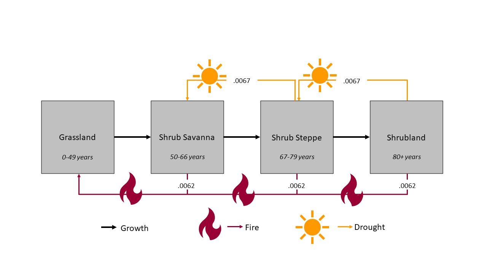
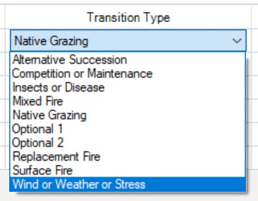
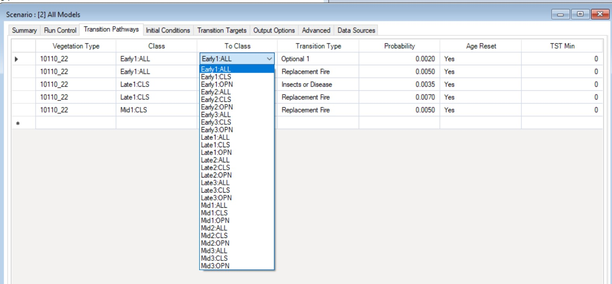

The goal of this section is to help you identify questions that the LANDFIRE BpS models (with their built-in simplifications, strengths, and constraints) are best suited to help you explore.
Directional changes in climate factors, such as increases in minimum or maximum temperatures, changes in precipitation patterns, and increases in evaporation and transpiration rates, are influencing vegetation dynamics through many mechanisms operating at a range of scales, from genes to biomes. Observed changes, in addition to ecological theory, allow us to generate hypotheses on how these changes may play out. As noted in a [previous sections] (link to Modeling perspectives), all models are a simplification of reality, and there are many different aspects of climate change that you might be interested in exploring with a model.
Climate drivers like temperature and moisture availability play critical roles in shaping the life history of plants and associated species in terrestrial ecosystems. As anthropogenic factors have acted to accelerate the rate of climate change, we are seeing a wide array of responses in plants, and other species that strongly influence vegetation dynamics.
The most frequently documented responses to climate change include changes in phenology (the timing of seasonal events, such as budburst), spatial shifts in range boundaries, and shifts in density patterns within a species’ range due to changes in recruitment or mortality as site conditions change.
Given that over evolutionary time, each species has developed a set of traits that reflect climate, abiotic factors, and competition for resources and other types of species interactions, we expect that the suite of species that make up an ecosystem will not all respond in the same way, leading to shifts in plant community composition.
Photo: © Marci Eggers, TNC. Close-up of of fern about to spring open in the Atlantic Forest rainforest, Guaraquecaba, Brazil.
Notably for applications with BpS models, changes in climate are influencing disturbance regimes. For example:
Drought tends to lengthen fire seasons and increase fire intensity
Higher temperatures (or temperature gradients) increase the intensity and dominant direction of wind patterns and probability of severe storms (i.e. hurricanes)
Increasing temperatures strongly affect poikilothermic (cold-blooded) species associated with vegetation, contributing to increased growth rates and higher numbers of generations per growing season for leaf/sap consuming insects
As described here (link to a section on model structure), LANDFIRE BpS models are comprised of a set of states and transitions. Each state is a recognizable seral stage or “condition” of a particular vegetation type, and these states are linked by deterministic transitions (usually representing growth towards an older, taller age class), and stochastic transitions representing disturbances such as fire (with an associated probability land intensity), windthrow, insect outbreak, etc. These transitions describe how one vegetation state is changed to a different state. In the montane sagebrush steppe ecosystem example below, the dominant species is “X” and the growth and response to disturbances are reflected in that species’ biology. Common to this ecosystem would be disturbances such as wildfire and invasive species (i.e. cheatgrass).
 In other vegetation classes with higher tree species diversity, such as mixed hardwood forests of the southern Appalachians, transitions represent an average across multiple species that are likely responding to climate drivers in different ways.
The “sweet spot” for LANDFIRE BpS models in a climate change context is exploring how climate change can influence disturbance regimes, and as a result influence the relative proportion of each ecosystem state over time. These tools allow users to consider time periods much longer than human experience (i.e., hundreds or thousands of years) and “illuminate” (link to Jim’s overview) how events with a range of different frequencies can interact to shape the distribution of vegetation classes on the landscape. However, remember that while the impacts of climate change on ecological systems are complex, this does not mean you should try to capture the full range of complexity in your model.
For example, the interaction between drought, insect outbreaks, and fire is an example of a multi-factor, climate-related driver of change in forested ecosystem, especially notable now in the western U.S.
While you could take an existing BpS model and add a drought factor, modify the current fire disturbances, and add an insect pest factor, if in effect these three drivers tend to operate together, we suggest at least starting your modeling work by treating this complex of drivers as one disturbance, potentially starting with the one for which you have the best information on rates (this might be fire regime).
Placeholder: insert slide with insect invasion added, and possible more perturbations introduced OR reflective of the fire regime comment
As you gain experience and insight, you can consider what additional things you might learn by trying to tease apart these interacting factors – for example by bringing in insect outbreaks as a separate factor, but with rates that recognize the role of drought conditions in both disturbance pathways (fire and insects). In the bulleted sections below, we link climate-related changes to how you would model them in the BpS-in-SyncroSim platform, moving from the basics to more specific hypotheses of change.


Increases in the intensity of fires, a trend that has been observed in forests with high vegetation density, often in combination with drought. To represent this process, you would increase the probablility of high intensity fires in your model – or potentially add this type of disturbance if it was not already in the model.
Photo: © Ben Jiang, TNC. One of the 2018 California wildfires.
Photo: © Chris Helzer, TNC. Niobrara River near the headquarters of the Nature Conservancy’s Nebraska Niobrara Valley Preserve after the 2012 wildfire.
Insect outbreaks that promote a state change in vegetation are not included in the “out of the box” BpS models. Insect outbreaks can be added, and then varied, in all of the ways described above for fire.
Warming temperatures:
Adding a separate insect outbreak component may be highly relevant, especially if there is evidence to support impacts that are independent of other drivers. In the case of drought-stressed trees contributing to high tree mortality, understanding variations in drought risk, for example associated with topography or soil water holding capacity, may allow you to partition out impacts by site conditions (see last bullet).
In some vegetation systems, managers have observed that increases in the intensity or extent of fires is leading to a failure of the ecological system to regenerate – reasons may include a loss of organic soil horizons in the intense fire, or a lack of seed sources close to the newly burned area. This observation could be modeled by adding a new vegetation class (perhaps a grass or shrub class, if the intent is to explore how this shift might drive an ecological transformation), or by increasing the duration of transition from the post-fire seral stage back to forest, to represent slower regrowth of trees, perhaps aided by active seed additions.
Representing variations in climate change exposure, or adaptive capacity within an assessment region
While BpS models are aspatial (see below), you can capture that variation by developing separate iterations of the same model if you have information on how vegetation dynamics might vary within an assessment area. For example, topographic factors or soil moisture may strongly influence the sensitivity of a system to a disturbance, the rate of recovery after a disturbance, or the probability that a disturbance will shift a vegetation type to a new class.
(delete this paragraph?) The influence of native and non-native insect pests is changing due to climate change, a pattern that can have major impacts on forest health when combined with a change in tree health due to drought exposure. Like fire, changes in the impact of insects can occur through changes in intensity, and/or duration of exposure (i.e., warmer temperatures are increasing overwinter
The structure of the BpS models provides a clear indication of the ecological level at which they operate, and can be applied to address questions about climate change. While range shifts are some of the most studied aspects of climate change responses, these models are not spatial, and tend to “lump” all species within a vegetation class together within a series of states. This is because it would be impossible to use this modeling platform to model the mechanistic relationships between all species within all types of ecosystems… If you are interested in exploring vegetation responses within what the BpS models consider a “state” – for example, exploring changes in species composition that might occur as a result of changes in tree competitive ability as growing seasons lengthen due to a warming climate – BpS models are likely not the best hammer for that nail!